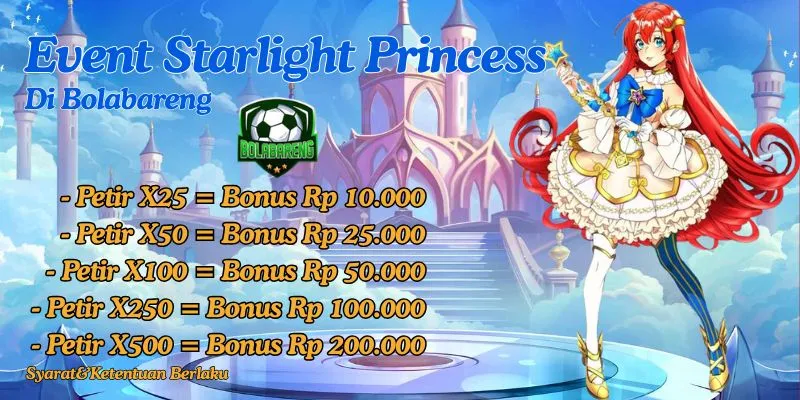

Pagi hari di pasar selalu punya suasana sendiri. Udara masih adem, orang-orang mulai berdatangan, dan suara obrolan kecil terdengar di mana-mana.
Ada yang duduk sebentar sambil ngopi, ada yang buru-buru belanja sebelum kerja, dan ada juga yang sekadar berhenti sejenak untuk menyapa orang-orang yang sudah dikenal.
Senyum kecil, sapaan ringan, hal sederhana seperti itu sering kali cukup bikin hari terasa lebih ringan.
Di sela waktu luang seperti ini, hiburan ringan kadang hanya soal menikmati momen tanpa terburu-buru.